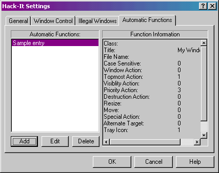
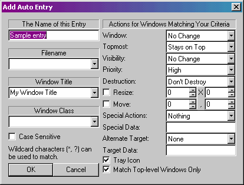

Almost every operation in Hack-It can be set up to fire automatically for a certain specification of window. This tab allows you to add, edit, and delete Automatic Functions. See Advanced Functions for more details.

